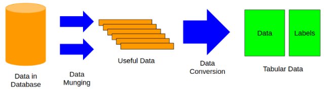
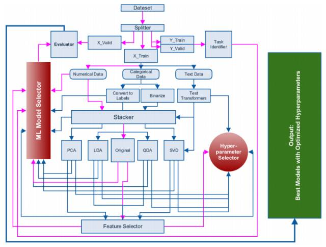
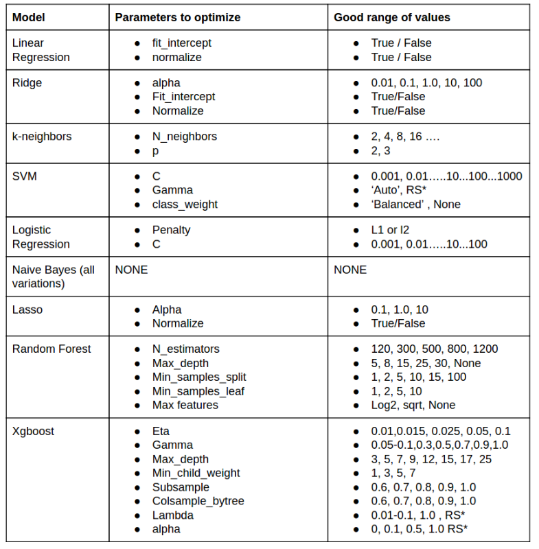

参考
Approaching (Almost) Any Machine Learning Problem | Abhishek Thakur <!-- more -->
预备知识
保持训练数据和检验数据中标签的一致性 ：
就是在模型训练的时候，训练的数据和测试的数据label的分布是一样的。也就是是分层抽样的意思， 好处是：在训练中不会有倾向。
one-hot 编码 :
又称一位有效编码，其方法是使用N位状态寄存器来对N个状态进行编码，每个状态都由他独立的寄存器位，并且在任意时候，其中只有一位有效。 可以这样理解，对于每一个特征，如果它有m个可能值，那么经过独热编码后，就变成了m个二元特征。并且，这些特征互斥，每次只有一个激活。因此，数据会变成稀疏的。
这样做的好处主要有：
-
解决了分类器不好处理属性数据的问题
-
在一定程度上也起到了扩充特征的作用 我们基于python和Scikit-learn写一个简单的例子：
1
2
3
4
5
6
7
8from sklearn import preprocessing
enc = preprocessing.OneHotEncoder()
enc.fit([[0, 0, 3], [1, 1, 0], [0, 2, 1], [1, 0, 2]])
enc.transform([[0, 1, 3]]).toarray()
---out---
array([[ 1., 0., 0., 1., 0., 0., 0., 0., 1.]])
数据
在采用机器学习模型前， 数据必须要转化成一个列表（Tabular）的形式。这是最消耗时间，也是最困难的，其过程如下： 
标签的类型
这些标签定义了所要解决的问题，可以有不同的形式：
- 单行，二进制值（分类问题，一个样本只属于一个种类，且种类总数只有2个）
- 单行，真值（回归问题，预测唯一值）
- 多行，二进制值（分类问题，一个样本属于一个分类，但是有2个或者多个种类）
- 多行，真值（回归问题，预测多值）
- 多个标签（分类问题，一个样本可以属于不同的种类）
评估价值
对于任何机器学习难题，我们必须知道要怎样评估自己的研究结果，或者说，评估的价值和对象是什么。为了防止二进制分类中的 负偏（skewed）的问题 ，我们通常会选择在运行特征曲线（ROC AUC 或者简单的 AUC）的接收器（receiver）下方区域进行评估。
在多标签和多类型分类难题中，我们通常选择分类交互熵，或者多类型的 log loss ，以及在回归问题中降低平方误差。
资料库
观看和进行数据处理：Pandas 各种机器学习模型：Scikit-learn 最好的梯度渐进数据库看：xgboots 神经网络：keras 绘图数据：matplotlib 监控进度：tqdm
机器学习框架

定义问题。
这可以通过标签确定。研究者首先要明确，你的问题是二进制的、多种类的、多标签分类的还是回归问题。在定义了问题之后，我们可以把数据分为两个不同的部分，如下文描述，一部分是训练数据，另一部分是检验数据。
数据集划分
把数据进行“训练”和“检验”的区分，必须要根据数据标签进行。在所有的分类问题中，都要试用分层分割。在Python中，你可以使用Scikit-learn来轻易地做到。
1
2
3
4
5
6form sklearn.cross_validation import StratifiedKFold
eval_size = 0.10
kf = StratifiedKFold(y, round(1. / eval_size))
train_indices, valid_indices = next(iter(kf))
X_train, y_train = X[train_indices], y[train_indices]
X_valid, y_valid = X[valid_indices], y[valid_indices]
在回归任务中，一个简单的K-Fold分割应该就足够了。但是，有一些复杂的方法，倾向于 保持训练数据和检验数据中标签的一致性。
1
2
3
4
5
6form sklearn.cross_validation import KFold
eval_size = 0.10
kf = KFold(y, round(1. / eval_size))
train_indices, valid_indices = next(iter(kf))
X_train, y_train = X[train_indices], y[train_indices]
X_valid, y_valid = X[valid_indices], y[valid_indices]
在上面的例子中，我选择 eval_size 或者 size of the validation set作为全部数据的10%，但是，你可以根据自己拥有的数据选择赋值。
在数据分层完成后，先把它们搁在一旁不要碰。在训练数据集上的任何操作都要保存，最后会运用到检验数据集中。而检验数据集，在任何情况下都不应该跟训练数据集混淆。如果能做到这样，就会得到非常好的分数。否则，你可能建立的是一个没多大用，且过度拟合的模型。
不同变量的处理
数据变量
首先把数据变量排除。这些变量并不需要任何的处理，我们可以使用标准的机器学习模型来处理。
种类变量
在种类变量的处理上，我们有两个方式：
把种类数据变成标签:
1
2
3
4
5from sklearn.preprocessing import LabelEncoder
lbl_enc = LabelEncoder()
lbl_enc.fit(catagorical_features)
xtrain_cat = lbl_enc.trainsform(x.train[catagorical_features])
把标签转化成二进制变量（one-hot 编码
1
2
3
4
5from sklearn.preprocessing import OneHotEncoder
lbl_ohe = OneHotEncoder()
lbl_ohe.fit(catagorical_features)
xtrain_cat = llbl_ohe.trainsform(x.train[catagorical_features])
文本变量
可以使用CountVectorizer或TfidfVectorizer ：
1
2
3from sklearn.feature_extraction.text import CountVectorizer
ctv = CountVectorizer()
text_data_train = ctv.fit_transtrom(text_data_train)
TfidfVectorizer的表现一直都比其他工具要好，据我观察，以下的参数几乎每次都有效：
1
2from sklearn.feature_extraction.text import TfidfVectorizer
tfv = TfidfVectorizer(min_df=3, max_features=None, strip_accents='unicode', analyzer='word', token_pattern=r'\w{1,}',ngram_range=(1, 2), use_id=1, sublinear_tf=1, stop_words='english')
stacker
叠式储存器（stacker） 模块。Stacker并不是一个模型stacker，而是一个特征stacker。在上文提到的处理步骤完成后，不同的特征可以被结合起来，用到Stacker模块中。
你可以使用numpyhstack或者sparse hstack把所有的特征水平堆叠起来，这取决你拥有的是稀疏或者紧密特征。
注意，此时数据没有被标准化，我们在上面的特征中不能使用线性模型。要使用线性模型，你可以从scikit-learn上使用Normalizer或StandardScaler。这些规范化的方法只有在紧密特征中才起作用，在稀疏特征中不会有好的效果。
特征的选择
特征的选择，有多种方式可以实现。最常见的是贪婪特征的选择（正向或反向）。在贪婪特征的选择上，我们选择一个特征，训练一个模型并用一个修正的评估值来评估模型的性能。我们不断增加或者移除一个又一个特征，并逐步记录模型的表现。随后，我们选出得分最高的特征。必须说明的是，这种方法并不是完美的，需要根据要求改变或修正。
其他更快的特征选择方法包括：从一个模型中选择最佳的特征。我们可以观察一个逻辑模型的稀疏，或者训练一个随机森林，来选择最佳的特征，然后在其他的机器学习模型上使用。
1
2
3
4
5form sklearn.ensemble import RandomForestClassifier
clf = RandomForestClassifer(n_estimators=100, n_jobs=-1)
clf.fit(X, y)
X_selected = clf.transform(X)
1
2
3
4
5import xgboost as xgb
params={}
model = xgb.train(params, dtrain, num_bost_rund=100)
sorted(model.get_fscore().items(), key=lambda t: =-t[1])
记得保持较少数量的Estimator，并对超参数进行最小优化，这样你就不会过度拟合。
特征的选择也可以通过Gradient Boosting Machines来实现。如果我们使用xgboost而不是在 scikit-learn中使用GBM时，效果会很好。因为xgboost速度更快、可扩展性更高。
我们也可以使用RandomForestClassifier 、RandomForestRegressor 和xgboost，在稀疏数据集中进行特征选择。
另一个较为流行的方法是基于chi-2的特征选择。
1
2
3
4
5
6# 在这儿，我们使用Chi2和 SelectKBes从数据中选择20个特征。这也变成了我们希望优化，来提升机器学习模型结果的超参数
from sklearn.feature_selection import SelectKBest
from sklearn.feature_selection import chi2
skb = SelectKBest(chi2, k=20)
skb.fit_transfrom(X,y)
模型的选择

超参数优化
我该优化哪些参数？我怎样才能选到最匹配的参数？这是人们考虑得最多的两个问题。没有在大量的数据库上体验过不同的模型和参数，是无法回答这一问题的。还有一点，许多人并不愿意分享这方面的经验。所幸我还有一点经验，也愿意分享：
